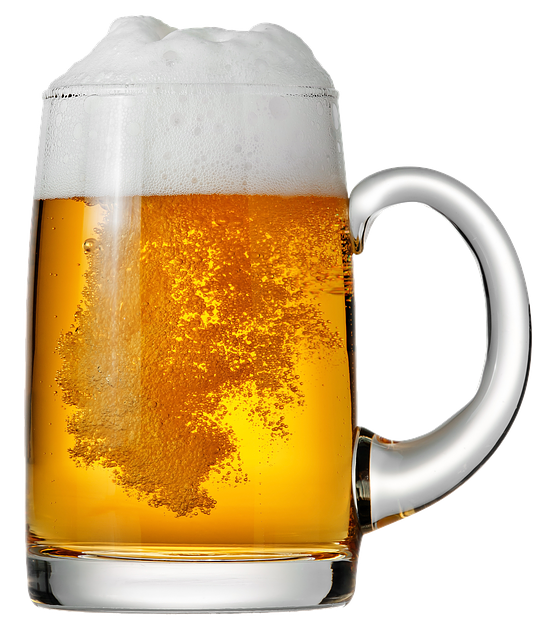

歴史
Mum'S BEERは1950年創立の国民的な缶ビール会社です。お客様のもとに美味しいビールを届けるために一本一本気持ちを込めて作っております。
我社のCEOは、2000年2代目CEOの後を継いだ です。彼女は29歳という若さでCEOの座につき、会社を引っ張ってきました。
我社の缶ビールは、伝統的な製法で作られています。様々なフレーバーや種類を取り扱っており、多くのお客様のご要望に対応しております。
ネット通販での販売も開始し、今現在は、56カ国で我社の製品が販売されております。
実績
1956年：初めて国民総缶ビール投票で1位を獲得
2000年：アメリカ支社を中心として計26カ国に企業を展開
2001年：福祉課による国際支援プロジェクト開始
2002年：発展途上国6カ国で子ども達が無料で授業を受けられる学校を設立
2010年：10年連続国民総缶ビール投票で1位を獲得
2015年：長年支持されるビール大賞受賞
2021年：英国の王家に缶ビール献上
1935年：米国絵始めての缶ビールが誕生。コーントップ型と呼ばれる缶でした。
1950年：第二次世界大戦後から缶ビールが普及し始める
1958年：日本初の缶ビールが誕生
1965年：初めて缶ビールの売上が瓶ビールと並ぶ
1980年：「容器戦争」に突入し、奇抜な容器を作る流行りが業界に訪れるが、1980年代の終わりには沈静化
〜現在：多くの企業が独自のアピールポイントを作るために泡、見た目、味、原材料などにこだわり始め、種類も多様化
この他にも全100種類の缶ビールを販売中！
| 定番商品 | 価格 |
|---|---|
| GUINESS | 271円(税込み) |
| BROOKLYN | 231円(税込み) |
| HINEKEN | 231円(税込み) |
| フルーツビール | 314円(税込み) |
| プレミアムビール | 347円(税込み) |
| コロ酔い | 214円(税込み) |
| FRESH〜フレッシュ〜 | 285円(税込み) |
Q. どこで買えますか？
A. 全国のコンビニと計56カ国のスーパーでお買い求め頂けます。詳しくはビールの歴史をご参照ください。
Q. 常温と冷蔵はどちらのほうが美味しいですか？
A. 冷蔵のほうが美味しいです。
Q. Mum'S BEERの一押しポイントはなんですか？
A. コクが深い味わいな上に、100％国産の麦を使用していることです。
Q. CEOが好きなおつまみはなんですか？
A. さきいかと、あたりめと、ホタルイカと、ホタテ貝の貝ヒモ干しと、エイヒレと、ちくわと焼き鳥です。
Q. 一番美味しく呑める時間帯？
A. 仕事が終わったあとの一杯は格別です。
Q. お父さんが好きなビールはなんですか？
A. EB○ISU BEERです。